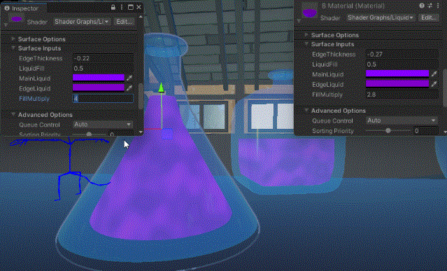
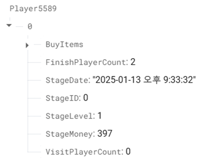
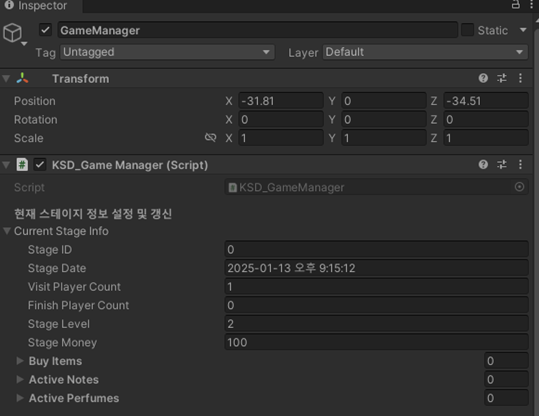
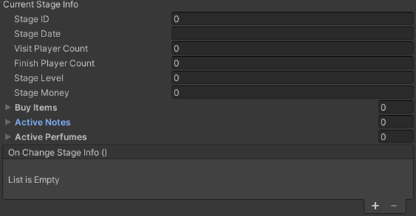
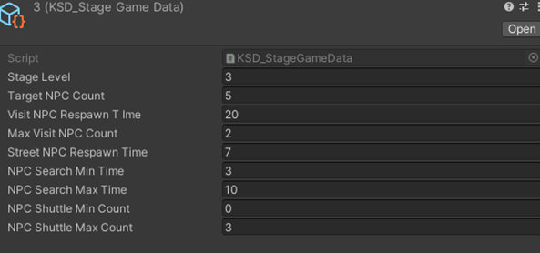
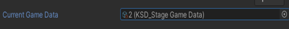
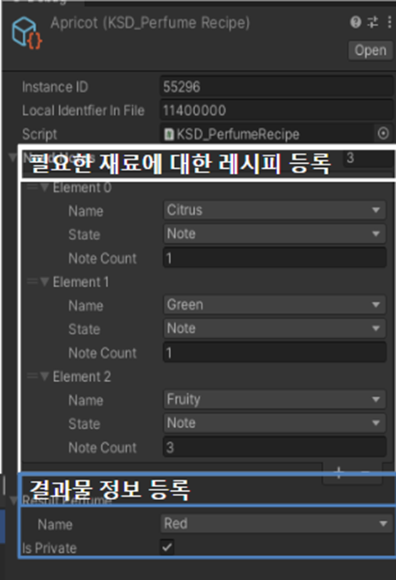
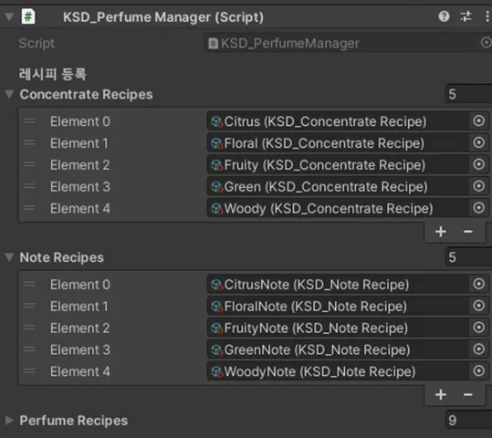
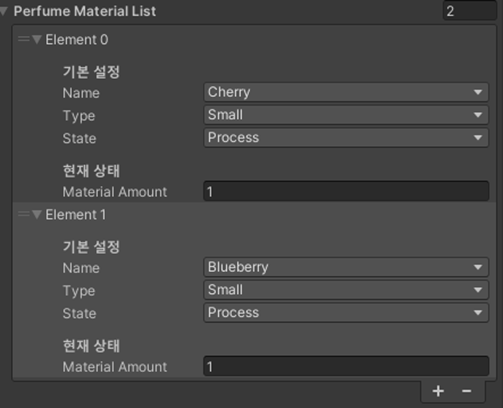

개발노트
MULTIPLAYER VR · 2024.12 — 2025.01 · PL / 게임 시스템·VR 콘텐츠
냥젤리 조향 공방
병을 기울여 재료를 붓고 흔들어 향수를 만듭니다. 두 사람이 같은 병을 집으려 할 때 어느 손의 움직임을 따를지가 조향 규칙만큼 중요했습니다.

담당 작업
게임 상태·밤낮·저장 및 불러오기 시스템
재료와 레시피 기반 향수 조합 시스템
병 기울기·액체 전달·흔들기 조합 VR 인터랙션
PUN2 소유권 전환과 Grab 동기화 예외 처리
구현 과정
게임 데이터 분리
향수 종류와 레시피를 ScriptableObject로 정의하고 재료 조합은 LINQ로 비교했습니다. 진행 상태와 밸런스 데이터를 분리해 레시피 추가가 코드 수정으로 이어지지 않게 했습니다.

병 기울기 판정
컨트롤러가 잡은 병의 방향과 월드 아래 방향을 내적해 따르는 상태를 계산했습니다. 병 입구의 Raycast가 다른 용기를 찾았을 때만 액체 전달을 시작했습니다.
액체와 조합 피드백
전달량을 FillAmount 셰이더에 반영하고, 흔들림이 임계값을 넘으면 현재 재료 목록을 레시피와 대조했습니다. 결과에 따라 완성 향수와 화면 피드백을 갱신했습니다.

저장과 네트워크 연결
스테이지 정보를 JsonUtility로 직렬화한 뒤 PUN 닉네임을 키로 Firebase Realtime Database에 저장했습니다. Grab 상태, 소유권, 액체량은 RPC와 상태 동기화로 공유했습니다.
개발 중 해결한 문제
같은 병을 잡을 때 물리 결과가 달라짐
상호작용 시작 시 오브젝트 소유권을 요청하고 원격 플레이어가 다시 잡지 못하도록 레이어를 제한했습니다. 잡고 있는 상태를 일회성 RPC가 아닌 지속 상태로 동기화해 늦게 입장한 사용자도 같은 상태를 받게 했습니다.

씬 이동 후 진행 정보가 사라짐
게임 매니저를 씬 전환에도 유지되는 싱글턴으로 구성하고 상태 변경 콜백을 두었습니다. 저장 데이터는 Firebase 트랜잭션과 스냅샷으로 읽어 중복 쓰기와 비동기 순서 문제를 줄였습니다.
밤낮 변화가 장면마다 따로 움직임
시간 상태를 한곳에서 관리하고 DOTween으로 Directional Light와 Skybox 셰이더 값을 함께 보간해 조명과 배경이 동일한 시간축을 따르도록 만들었습니다.
시스템 - 세이브 & 로드
기능 기획 배경
게임 내에서 각 스테이지 진행 상황을 저정하고 불러올 수 있는 기능이 요구
이에 따라, 스테이지 별 정보를 구조화하고 플레이어의 닉네임을 기준으로 DB 서버에 저장할 수 있는 시스템을 설계
구현방식
- 스테이지 정보 구조 정의
- 다음의 항목을 포함하는 스테이지 정보 클래스 설계
- 스테이지 레벨
- 플레이어 자금
- 처리한 손님 수
- 향수 레시피 활성화 여부
- 아이템 보유 상태 등

- 저장 및 불러오기 방식
SaveLoadManager를 싱글톤으로 구현하여 씬 전환시에 유지되도록 구성- Pun2의 유저 닉네임을 기준으로 데이터 구분하여 스냅샷으로 이용
- 스테이지 정보를 JSON형태로 직렬화 및 역직렬화를 통해 Firebase에서 저장 & 불러오기 구현 (JsonUtility 사용)

구현 성과
- Firebase Realtime Database의 트랜잭션 기능을 활용하여 동시 접근 시 발생할 수 있는 데이터 충돌을 방지해서, 유저별 데이터를 안정적으로 관리
- 스냅샷(Snapshot) 기반 데이터 참조로, NoSQL 구조의 빠른 속도를 유지하며 실시간 게임 상태를 효율적으로 처리
- 씬 전환에도 유지되는 싱글톤 매니저를 구성하여, 로비 씬과 인게임 씬 간 전환에도 게임 상태를 안정적으로 유지
- 스테이지 정보를 직렬화하여 인스펙터에 노출하여, 개발 도중 게임 상태를 직관적으로 파악하고 디버깅 효율을 향상
- JSON 처리 방식은
Newtonsoft.Json이나JsonUtility중 선택 가능하지만, 단순한 구조의 데이터만 다루기 때문에 Unity 내장JsonUtility를 활용하여 최적화
시스템 - 게임 상태 관리 & 밤낮 변화
기능 기획 배경
손님의 주문을 완료한 횟수에 따라 스테이지의 다양한 시스템 요소가 변화해야하는 기능 요구.
이에 따라, 게임 전체의 상태를 전반적으로 제어할 수 있는 게임 매니저 시스템이 필요하다고 판단
구현 방식
- 게임 상태 관리 기능
- 게임 매니저는 스테이지 진행에 필요한 정보를 저장하거나 관리, 일회성 밸런싱 데이터에 따른 게임 상태 관리 역할을 수행하므로, 두 가지 클래스 구조로 데이터 분리
- 게임 매니저 클래스
스테이지 시간, 처리한 손님 수, 스테이지 레벨 아이템 구매 여부, 레시피 해금 여부 등을 포함

- 일회성 밸런싱 클래스
목표 손님 수, 손님 생성 주기, 손님의 이동 주기 등으로 구성했으며, ScriptableObject 형태로 구현하여 밸런스 조정이 용이하도록 설계

일회성 데이터는 스테이지의 레벨에 따라 자동으로 참조되도록 설정

게임 매니저는 싱글톤 패턴으로 설계하여 씬 전환에도 인스턴스가 유지되며, 게임 전반의 상태를 관리하도록 설계
게임 상태 변화에 대한 이벤트를 두어 콜백할 수 있도록 하여, 게임 상태의 변화에도 게임이 안정적으로 진행될 수 있도록 구현
- 밤낮 변화 기능
- 밤낮 변화는 스테이지 진행도에 따라 자연스럽게 전환되도록 설계
손님 처리 수를 실시간으로 감지하여 이벤트 콜백을 통해 전달했으며, DoTween을 이용한 Directional Light의 회전과 Skybox쉐이더의 큐브맵 조정을 통해 점진적안 낮→밤 변화를 연출
이를 통해, 스테이지 진행도에 따른 실시간 피드백을 제공하도록 구현
- 씬 전환 페이드에 적용된 지연 보상
- 페이드 효과는
FadeObject를FadeManager를 통해 일괄 제어 - 씬 전환 시, 여러명의 플레이어는 같은 페이드 시점을 가질 수 있도록 네트워크 지연보상적용
- 지연보상은 RPC의 호출 시점과 수신 시점 간의 시간차이를 통해, 페이드 시간 차를 두는 방식으로 구현
구현 성과
- 게임 상태를 게임 매니저 클래스와 일회성 밸런싱 클래스로 분리함으로써, 지속적으로 유지할 데이터와 매 스테이지마다 달라지는 밸런싱 데이터를 명확히 구분
- ScriptableObject를 활용한 밸런싱 데이터 관리를 통해, 코드 수정 없이도 밸런스를 손쉽게 조정할 수 있어 기획자 및 다른 개발자가 유지보수 용이
- 이벤트 콜백을 통해 **각 시스템이 독립적으로 게임 상태 변화에 반응할 수 있어 모듈화**하기 용이
- DoTween과 Skybox 쉐이더 활용을 통해 점진적인 라이트와 분위기 변화로 낮/밤 전환을 하여 몰입감 제공
- 씬 전환 시 Fade 처리로 VR 환경에서 화면 전환 할 때, 사용 피로도가 최소화
- FadeManager를 통한 동기화 처리로, 네트워크 환경에서도 모든 플레이어가 적절히 지연보상을 받아 ****일관된 게임 상황 제공
시스템 - 향수 시스템
기능 기획 배경
조합표를 토대로 여러 재료의 특징과 용량에 따라 조합하는 기능을 요구
각 재료의 정보와 조합 로직을 스크립터블 오브젝트를 활용하여 쉽게 관리 및 확장 가능하도록 설계
구현 방식
- 재료 클래스 구조 분리
- 원재료, 노트, 향수로 재료의 종료를 명확히 분리
- 각 클래스는 이름, 상태, 타입, 고유 색상 등의 데이터를 포함

- 레시피 등록 및 관리
- 원재료, 원액, 노트에 대한 레시피를
ScriptableObject로 제작해 인스펙터에서 직접 등록/수정 가능하도록 구현

- 생성된 레시피 오브젝트들은 매니저에 등록되어 유효성 검사에 사용되도록 설계

- 조합 매니저 구현 및 절차
- 투입되는 재료의 유효성 검사
- 등록된 레시피와의 매칭 여부 검사
Linq를 통한 코드 단순화
- 조합 성공 여부 및 결과물 반환
반환형은 조합 성공 여부, 출력 매개변수로 결과물 반환
구현 성과
- 재료 클래스를 원재료, 원액, 노트로 명확히 분리하여, 특정 종류의 재료에 특징이 바뀔 때, 유지보수하기 용이
- 레시피 데이터를 ScriptableObject로 설계함으로써 인스펙터에서 직접 등록 및 수정을 하도록 하여 직관적이고 쉽게 데이터 관리
- Linq를 통한 조합 유효성 검사 및 결과 반환으로 코드 간결성과 가독성 증가, 복잡한 조합 조건도 효율적으로 구현
컨텐츠 – 원액병
기능 기획 배경
게임 내에서 액체 원액을 병에 담고, 다른 병으로 전달하거나 섞어서 새로운 조합을 생성하는 시스템이 필요
따라서 액체를 담거나 붓는 방식의 직관적인 상호작용과, 플레이어의 물리적 움직임(흔들기)을 반영하여 조합이 이뤄지는 구조를 요구
구현 방식
- 액체 전달 기능
- 재료 정보 및 용량 관리
재료 정보를 담은 클래스를 직렬화하여 인스펙터에서 확인 및 수정 가능하도록 구성

액체의 양은 FillAmount 를 통해 관리하도록 하여, 실시간으로 쉐이더의 액체량 조절
- 기울기 체크 및 파티클 연출
VR 컨트롤러에 붙은 병의 방향 벡터와 월드 기준 아래 방향 벡터 의 내적을 활용하여 기울어진 정도를 정량적으로 측정
또한, 측정된 내적값이 일정 각도를 넘은 경우에, 병을 쏟았다 판단하여 액체 파티클을 재생하는 방식으로 구현
- Raycast 기반으로 액체 전달
병 입구에서 Raycast를 발사하여 다른 병의 콜라이더를 탐지하고, 시간에 따라 일정량의 액체가 이동하도록 구현
이 과정에서 자기 자신 및 예외적인 물체에 대한 레이어 필터링을 통해 제외되도록 구현
- 흔들기 기반 원액 조합 기능
- 조합 조건 변수 정의
흔들기 제한 속력, 제한 시간, 지연 시간을 두어 유효한 흔들기 동작만 감지되도록 설정
- 흔들기 액션 감지
다음 조건들 전부 부합하는 경우에만 조합 루틴이 실행되도록 구현
- 현재 속력이 흔들기 제한 속력을 넘는 경우
- 흔들고 있던 시간이 제한 시간을 넘긴 경우
- 도중에 흔들던 시간이 멈췄을 때, 지연 시간을 넘기지 않은 경우
(모종의 이유로 특정 프레임에서 속력이 멈추는 경우 방지)
- 조합 루틴 실행 및 결과 처리
조합 루틴 조건이 만족된 경우에 조합 기능이 실행되며, RPC를 통해 모든 클라이언트에게 동일한 결과를 반영하도록 설계
또한, SFX, VFX를 통해 사용자에게 조합 여부에 대한 피드백을 제공
구현 성과
- 병의 기울기와 월드 벡터 간 내적 연산을 통한 액체 붓기 동작을 구현하여 사용자의 손동작에 따른 사실적인 상호작용 제공
- Raycast 기반의 액체 전달 시스템으로, 레이어 필터링을 통해 정확한 액체 이동 대상을 판별하여 정밀한 상호작용 구현
- 쉐이더와 연동된 FillAmount 값과 액체의 시각적 양을 시간과 연동하여 구현하여 정확한 액체량 전달 가능
- 흔들기 기반 조합을 RPC로 동기화하여 멀티플레이어 환경에서도 일관된 조합 결과 유지하여 네트워크 상황에서 사용자의 게임 상황 일관성 확보
컨텐츠 – 레시피 스크린
기능 기획 배경
레시피 정보를 직관적으로 확인할 수 있는 스크린 형태의 상호작용 콘텐츠 구현을 요구
단순한 UI 클릭이 아닌, 플레이어가 직접 프로젝터를 잡고 펼치는 물리적 동작을 통해 레시피가 나타나도록 설계하여 몰입감 있는 사용자 경험 제공
또한, 레시피는 처음부터 모두 공개되는 것이 아닌, 조합에 성공한 경우에만 해금되는 방식으로 구성
레시피 해금 여부는 스테이지별 저장 데이터와 연동되도록 설계하여, 게임 진행 상황에 따라 레시피가 지속적으로 축적되도록 구성
구현 방식
- 스크린 상호작용 기능
- 손잡이를 잡고 위아래로 움직이는 동작을 기반으로, 스크린이 점차 펼쳐지는 효과 구현
- 스크린 사이즈는 일정 범위 내에서만 변화하며, 상호작용이 종료되었을 경우에는 일정 속도로 자동으로 접히도록 구현
이를 위해, 기존의 XRToolkit의 Interactable의 기능을 확장하여 구현
- 블라인드 레시피 해금 연출
- 해금되지 않은 레시피는 물음표 박스 이미지로 가려지도록 구성
- 해금된 레시피는 스크린이 펼쳐지는 시점에 맞춰 물음표 박스의 Fill Amount를 조절하여 해금 물음표 박스를 비활성화
- 레시피 해금 데이터 관리
- 스테이지마다 레시피 해금 여부를 기록하는 리스트형 변수를 게임 매니저에 추가
- 플레이어가 조합에 성공할 경우, 해당 레시피 정보를 리스트에 기록하고 향후에도 해금 상태 유지
- 게임을 다시 시작하거나 스테이지를 불러올 때도 레시피 해금 정보가 유지되도록 데이터 연동 처리
- 네트워크 동기화 처리
- 여러 클라이언트에서 상호작용이 불일치하지 않도록, 오브젝트의 소유권을 상황에 따라 변경
- 한 사용자가 스크린을 잡고 있을 경우 다른 사용자가 중복해서 잡지 못하도록 레이어 처리
- 스크린의 잡힘 상태를 지속적으로 동기화하여, RPC 누락이나 지연 상황에서도 물리 버그 없이 안정적인 상태 유지
구현 성과
- 스크린 조작을 직접 손으로 수행할 수 있도록 커스터마이징하여 사용자의 움직임이 직접 반영되는 몰입도 향상
- 데이터 저장과 연동된 레시피 해금 시스템을 통해, 플레이어의 진행 상태가 지속적으로 반영되도록 구현
- 멀티플레이 상황에서 잡힙 상태 및 레이어를 활용한 예외처리를 통해 일관된 게임 상황 제공
# 기술적 이슈
네트워크 – Grab 동기화 이슈 해결
문제~상황
Pun2 기반의 네트워크 상호작용 구현 과정에서, 플레이어 간 Grab(잡기) 상호작용의 동기화가 제대로 이루어지지 않아 다음과 같은 문제가 발생
- 서로 다른 클라이언트에서 오브젝트의 소유권 충돌로 인해 상호작용 결과가 불일치
- 오브젝트를 놓았음에도 물리적으로 계속 붙어 있는 현상 발생
- 간헐적으로 오브젝트가 순간이동하거나, 공중에 떠 있는 상태로 고정됨
다수의 플레이어가 동시에 같은 오브젝트를 조작할 수 있는 상황에서 발생하는 것을 확인했고, 이러한 문제가 네트워크 상호작용에서 발생하는 지연 및 소유권 전환 오류에서 발생하는 문제라고 가정하고 접근
해결~방법
- 소유권 및 레이어 설정을 통한 제어 안정화
- Grab 또는 Release 동작 시, 상호작용 주체가 명확하게 오브젝트의 소유권을 갖도록 설정
- 오브젝트가 이미 잡힌 상태일 경우, 다른 플레이어가 소유권을 탈취하지 못하도록 레이어 및 인터랙션 제한 적용
- 이로 인해 예상치 못한 충돌이나 동기화 오류를 사전에 방지할 수 있었음
- Grab 상태의 지속적 동기화 처리
- 오브젝트의 Grab 여부를 상시 동기화하여, 네트워크 지연으로 인한 Grab 상태 불일치 문제를 완화
- RPC 호출이 실패하거나 지연된 상황에서도, Grab 상태를 동기화 정보로 판별하여 예외 상황에서도 오브젝트 상태를 일관되게 유지
- 이 방식은 특히 Rigidbody 설정(중력, 물리 활성화 등)과 연동되어, 오브젝트의 물리적 상황을 일관되게 제어할 때에 효과적
액체 쉐이더 – 병 크기별 액체 표현 이슈 해결
문제~상황
향수 제작 시스템에서 다양한 크기의 병에 액체 쉐이더를 동일하게 적용할 때, 다음과 같은 이슈가 발생
- 병의 크기가 클수록 액체가 덜 차 보이는 현상
- 실제
LiquidFill값은 동일하지만, 시각적으로 병의 형태나 두께에 따라 액체가 충분히 채워지지 않음 - 플레이어 입장에서 조합 시 액체의 양을 직관적으로 인식하기 어려움
이러한 문제는 쉐이더에서 배율 개념이 반영되지 않아, 병의 크기 변화에 대응하지 못한다고 가정하고 접근
해결~방법
- 병 크기 반영을 위한 배율 변수 도입
- 액체의 높이를 병의 크기나 비율에 따라 조정할 수 있도록, 쉐이더 내에 배율 변수(Multiplier) 를 새롭게 정의
- 기존 LiquidFill 값과 배율 변수 연산 적용
- 쉐이더 내부에서 액체의 높이를 제어하던 기존
LiquidFill값에 새롭게 도입한 배율 변수를 곱하는 방식으로 연산 구조 변경 - 병 형태에 따라 액체의 충전 시각 표현이 왜곡되지 않도록 일관된 결과 제공